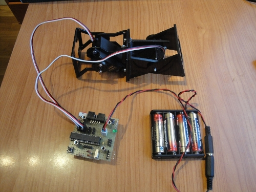
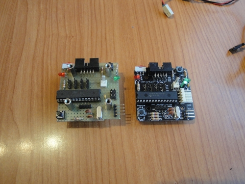
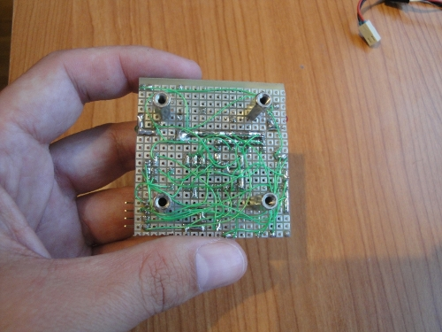

Ya está listo el primer prototipo de la tarjeta Skycube-mega para usarla en la locomoción de los robots modulares. Es similar a la Skycube pero con el micro ATMEGA328 de Atmel en vez del PIC16F876A de Microchip.
Para comprobar su funcionamiento se ha realizado la locomoción del robot Minicube-I, utilizando la nueva versión del software de micro-osciladores que ha sido portada al Atmel. Aquí podéis ver un vídeo:

En esta foto podéis ver la placa junto a la Skycube. Tienen el mismo tamaño y los conectores están situados en los mismos lugares. Los conectores para la programación “in-circuit” son diferentes, así como el conector del puerto serie que para la Skycube-mega es de 4 pines en vez de 3. Esto permite utilizar la señal RTS para realizar un auto-reset de la placa y poder descargar programas sin apretar ningún pulsador. La descarga se realiza con el cable de FTDI

Los primeros prototipos siempre los cableo a mano. Utilizo hilo de wrapping que sueldo en los pines para hacer las conexiones.
